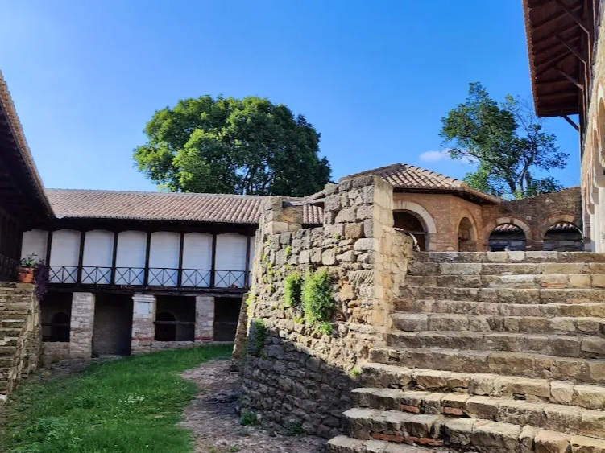
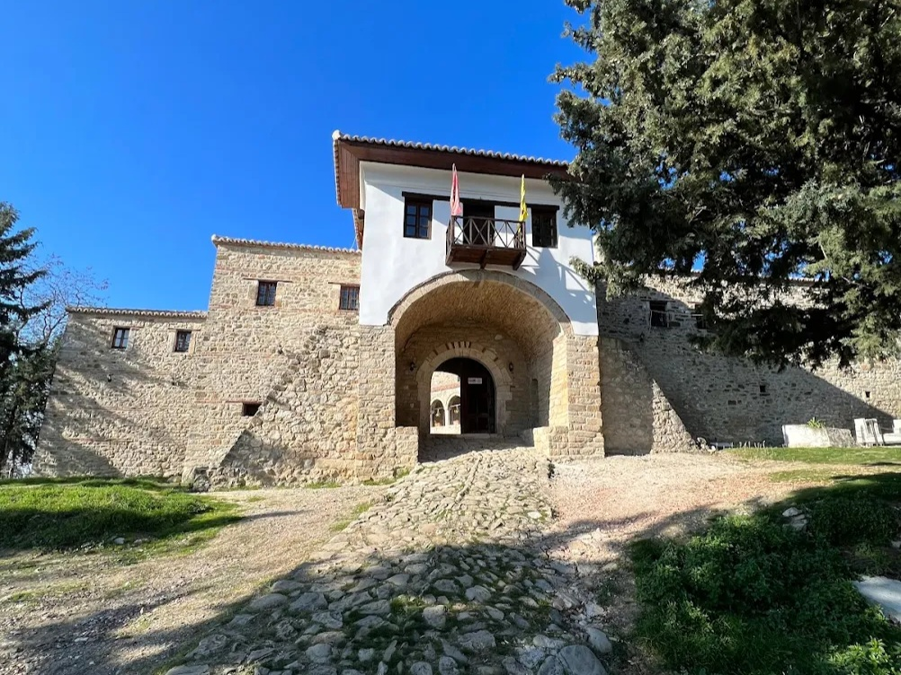
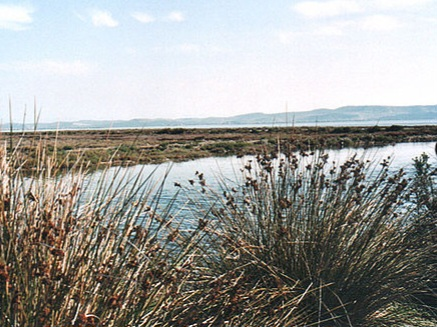

Kongresi, Lushnjë
SHTËPIA E KONGRESIT
Ardenicë, Rrethi i Lushnjës
Një video spot që tregon bukurinë e qytetit tonë.

Kongresi i Lushnjës ishte një ngjarje e rëndësishme për historinë e Shqipërisë, ku u morën vendime të kryesishme për të ardhmen e vendit pas Luftës së Parë Botërore. Në këtë kongres, përfaqësuesit e qeverisë së Përkohshme të Shqipërisë dhe atdhetarë të tjerë u mblodhën për të diskutuar dhe miratuar një sërë masash që ndikuan në formimin e shtetit shqiptar modern.
Shtëpia muze e Kongresit të Lushnjës ofron një shëtitje të ngjarjes historike të këtij kongresi. Ekspozitat dhe materialet e paraqitura shpalosin detaje të rëndësishme mbi takimet, diskutimet dhe vendimet që u morën në këtë periudhë kritike për historinë e Shqipërisë.
Përveç kësaj, në muze janë prezantuar edhe dokumente origjinale, fotografi dhe objekte të tjera të cilat ndihmojnë në kuptimin e thellë të kontekstit historik dhe politik të kohës së Kongresit të Lushnjës.
Muzeu i "Kongresit të Lushnjës" është një destinacion i rëndësishëm për ata që duan të mësojnë më shumë për periudhën e pasluftës dhe zhvillimet që ndodhën në Shqipëri në fillimin e shekullit të kaluar. Nëpërmjet ekspozitave dhe materialeve informative, vizitorët mund të njihen më mirë me historinë dhe trashëgiminë e vendit.


Muzeu Historik Lushnjë është një institucion kulturor i rëndësishëm në qytetin e Lushnjës, i cili konservon dhe ekspozon një gamë të gjerë të objekteve të rëndësishme historike dhe kulturore. Me rreth 200 objekte në koleksionin e tij, ky muze ofron një udhëtim të pasur nëpër historinë dhe kulturën e zonës së Lushnjës dhe më gjerë.
Në Muzeun Historik Lushnjë, vizitorët mund të zbulojnë një informacion të përgjithshëm rreth objekteve arkeologjike që janë zbuluar në territorin e Lushnjes. Kjo përfshin artefakte dhe gjurme të kulturave të ndryshme që kanë jetuar dhe lënë ndikimin e tyre në këtë rajon, duke e bërë atë një vend të rëndësishëm arkeologjik në historinë e Shqipërisë.
Gjithashtu, muzeu përmban një koleksion të pasur të objekteve etnografike, të cilat përfaqësojnë traditat, kulturën materiale dhe jetën e zakonshme të banorëve të kësaj zone nëpër shekuj. Këto objekte ofrojnë një pamje të qartë të jetës së përditshme dhe traditave të trashëgimisë kulturore të këtij vendi.
Në sallat e tij, Muzeu Historik Lushnjë gjithashtu shfaq një koleksion të mjaftueshëm të fotografive të periudhave të Luftës së Parë dhe të Dytë Botërore. Këto fotografi ofrojnë një ndriçim në ngjarjet historike dhe ndikimin e tyre në komunitetin lokal, duke përforcuar të kuptuarit e historisë së këtij vendi dhe kujtesën e ngjarjeve të rëndësishme botërore.
1. Paleoliti (Epoka e Gurit të Vjetër) – rreth 100,000 – 10,000 p.e.s
Kjo periudhë përfshin zhvillimin e parë të njerëzimit në territorin e Shqipërisë.
Gjetjet më të rëndësishme janë në shpellat e Xarës (Sarandë), Konispolit, Treni (Devoll), dhe Kryegjatës (Mallakastër).
Banorët ishin kryesisht gjuetarë dhe mbledhës frutash, duke përdorur vegla prej guri të latuar.
Kanë ekzistuar vendbanime kryesisht në shpella dhe zona të mbrojtura natyrore.
2. Mezoliti (Epoka e Gurit të Mesëm) – rreth 10,000 – 7,000 p.e.s
Kjo periudhë përfaqëson kalimin nga jeta nomade drejt vendbanimeve më të qëndrueshme.
Në Shqipëri, gjurmët e kësaj epoke janë më të pakta, por ka dëshmi se veglat e guri filluan të përpunoheshin më mirë.
Banorët filluan të përdorin teknika më të avancuara për gjueti dhe peshkim.
Periudha e Mezolitit shënon fillimin e kalimit drejt bujqësisë dhe blegtorisë.
3. Neoliti (Epoka e Gurit të Ri) – rreth 7,000 – 3,000 p.e.s
Periudha e Neolitit karakterizohet nga zhvillimi i bujqësisë dhe blegtorisë, duke çuar në krijimin e vendbanimeve të përhershme.
Gjetjet më të rëndësishme arkeologjike për këtë periudhë janë në Maliqin, Cakranin (Fier), Vashtemin (Korçë) dhe Blazën (Mat).
Fillon prodhimi i enëve prej balte dhe përdorimi i teknikave më të përparuara për përpunimin e gurit dhe kockave.
Kultura e Maliqit është një nga më të rëndësishmet e kësaj periudhe në Ballkan, duke treguar ndikime nga kultura të tjera mesdhetare dhe ballkanike.


Qytetërimet ilire ishin një grup fisesh të lashta që jetonin në Ballkanin Perëndimor, kryesisht në territoret e sotme të Shqipërisë, Kosovës, Malit të Zi, Bosnjë-Hercegovinës, Kroacisë, Serbisë dhe Maqedonisë së Veriut. Ata u zhvilluan nga epoka e bronzit deri në pushtimin romak në shekullin II p.e.s.
1. Origjina dhe Shtrirja
Ilirët ishin një popull indoeuropian që u shfaq në Ballkan që në mijëvjeçarin e dytë p.e.s.
Fiset ilire ishin të shumta, si Taulantët, Ardianët, Dardanët, Labeatët dhe Autariatët.
Kryeqendrat e tyre përfshinin Shkodrën, Rhizonin (Risanin), Byllisin, Dyrrahun (Durrësin) dhe Skupin (Shkupin).
2. Organizimi Politik dhe Shoqëror
Fillimisht u organizuan në fise të pavarura, por më vonë krijuan mbretëri të fuqishme si ajo e Ardianëve dhe Dardanëve.
Mbretëria Ardiane nën sundimin e Agronit dhe Teutës luftoi kundër Romës në shekullin III p.e.s.
Dardanët kishin një organizim të fuqishëm dhe zhvillim ekonomik të rëndësishëm.
3. Ekonomia dhe Kultura
Ilirët ishin kryesisht blegtorë dhe bujq, por njiheshin edhe si detarë dhe tregtarë të zotë.
Ata kishin një kulturë të pasur artizanale, duke prodhuar enë qeramike, armë dhe stoli të sofistikuara.
Arkitektura e tyre përfshinte qytete të fortifikuara me mure guri (kalatë ilire).
4. Feja dhe Besimet
Ilirët adhuronin natyrën dhe kishin perëndi të shumta, si Bindusi (perëndi e ujërave) dhe Anzotiku.
Kulti i gjarprit ishte i përhapur në mesin e tyre.
5. Marrëdhëniet me Romën dhe Pushtimi Romak
Ilirët luftuan disa herë kundër Romës në Iliricum Wars (Luftërat Ilire) midis shekullit III dhe II p.e.s.
Pas disfatës së Teutës dhe Gentit, ilirët u pushtuan gradualisht nga romakët, duke u përfshirë në Perandorinë Romake.
6. Trashëgimia
Ilirët konsiderohen si paraardhësit kryesorë të shqiptarëve.
Disa nga figurat më të njohura me origjinë ilire përfshijnë perandorë romakë si Diokleciani dhe Konstantini i Madh.
Gjuha ilire nuk ka mbijetuar, por disa elementë besohet se kanë kaluar në shqipen e sotme.
Ilirët luajtën një rol të rëndësishëm në historinë e Ballkanit dhe ndikimi i tyre ende shihet në kulturën dhe gjuhën e rajonit.
Mendohet se themelet e këtij manastiri janë hedhur në vitin 1282 me nismën e perandorit Andronik II Paleolog të Bizantit, i cili e ngriti këtë tempull pas fitores mbi anzhuinët në Berat. Shtysë për këtë veprim do të jetë bërë ndodhja në atë vend e kapelës së Shën Triadhës, e ngritur aty shekuj më parë. Ekziston hipoteza se kapela mund të jetë ndërtuar në themelet gërmadhë të një tempulli pagan, i cili ka qenë ndërtuar për nder të hyjneshës Artemisa nga ka rrjedhur dhe emri i sotëm Ardenica. Fare pranë këtij tempulli, në rrethinat e të cilit sot ndodhet manastiri, kalonte dega jugore e rrugës antike Egnatia, pikërisht 1 km në perëndim të tij. Për rreth manastirit shikohen, aty-këtu, ndërtime të vjetra, të cilat të japin mendimin se rreth tij ka pasur ndoshta një qendër të banuar. Sipas defterit osman të vitit 1431-'32, në nahijen e Myzeqesë, ndodhej fshati Ardenicë me tetë shtëpi, i cili mund të jetë shtrirë për rreth manastirit. Dëshmi tjetër, për rëndësinë e këtij manastiri është dhe fakti që po zë një vend gjithnjë e më të rëndësishëm në historinë e Shqipërisë, se në altarin e Kishës së manastirit të Ardenicës, është bërë edhe kurorëzimi i martesës së heroit tonë kombëtar, Gjergj Kastrioti me Andronika Arianitin. Ceremoniali u bë në mesditën e 21 prillit 1451 nga peshkopi i Kaninës Feliks, në prani të princave shqiptarë dhe ambasadorëve të Napolit, Venedikut, Raguzës. Këtë fakt e përmend për herë të parë në vitin 1940, italiani A. Lorenconi.

Manastiri është i tipit bizantino-ortodoks. Ai, së bashku me konaket që i janë shtuar më vonë, zë një sipërfaqe prej 2.500 m2. Ky monument përbëhet nga kisha e Shën Mërisë, kapela e Shën Triadhës, konaket, mulliri vajit, furra, stalla, etj. Në qendër të tij ndodhet kisha "Lindja e Shën Mërisë", e cila është ndërtuar pjesërisht me gurë të sjellë nga Apollonia dhe gurë shtufi. Kisha është e tipit Bazilikal. Ajo zë një vëllim të madh dhe është e mbuluar nga një çati druri me tavan të rrafshët. Mjediset që përbëjnë këtë kishë janë: naosi, narteksi, egzonarteksi dykatësh, ku në fund u bashkëngjitet kambanorja e lartë 24 m. Në anën jugore ndodhet portiku i hapur i ndërtuar me kolona dhe harqe. Naosi përbëhehet nga tre pjesë, të cilat ndahen në dy rreshta kolonash prej druri. Naosi ndahet nga altari me anë të ikonostasit. Dyshemeja e kishës është shtruar me pllaka guri, e cila përfshin edhe ambientet e narteksit dhe egzonarteksit. Në vitin 1743 me nismën e peshkopit të Beratit, Metodit, i cili ishte me origjinë nga Bubullima (Myzeqe), u bënë në këtë manastir punime rregulluese përfshirë edhe kishën e Shën Mërisë. Kapela e Shën Triadhës shtrihet në pjesën verilindore të manastirit dhe ka përmasa 7,50 m x 3,70 m. Hyrja e saj është në anën perëndimore dhe është e pajisur me dy dritare të vogla në faqen jugore. Kjo kapelë është ndërtuar me gurë shtufi dhe është e pajisur me një hapësirë, muri gjysmërrethor i së cilës e ndan atë nga një sternë uji. Porta e kapeles është mbuluar me harkë guri, pranë dritares lindore të saj ndodhet edhe një reliev qeramike.
Kodrat e Ardenicës ndodhen në jug të fushës së Myzeqesë së madhe me një pozitë dominuese që shihet nga të gjitha anët me një lartësi 237m mbi nivelin e detit. Kjo pozitë si ballkon, ku nga këmbanorja e tij shihen Kruja, mali i Dajtit, Tomorri, deti Adriatik, laguna e Kravastasë e deri në jug malet e Labërisë, e bëjnë Ardenicën një vend të vizituar nga turizmi shplodhës dhe argëtues, vlerat e të cilit ia shton edhe pylli halor dhe ullishtat që ndodhen në bregoret për rreth manastirit. Gjithashtu vlerat që zotëron ky tempull, për të cilat folëm më sipër, e bëjnë atë një nga qendrat më tërheqëse të turizmit studimor. Në këtë drejtim ndikon dhe fakti që pellgu i Myzeqesë, në sajë të pozitës kyçe dhe të privilegjuar ka pasur gjithmonë një nivel të lartë zhvillimi ekonomiko-kulturor. Dëshmi për këtë janë një sërë manastiresh të mesjetës së hershme si forma refleksesh të këtij zhvillimi. I tillë ka qenë dhe mbetet edhe manastiri "Lindja e Shën Mërisë" së Ardenicës.
Liqeni i Kasharajt, ndodhet vetëm 2 km larg qytetit të Lushnjës, në Njësinë Administrative Karbunarë, me një peisazh mjaft të bukur, i cili e bën këtë zonë të vizitohet nga shumë turistë.
Në Kasharaj ruhet dhe një monument kulturor-historik (urë) e cila i përket shekujve XII-XIII e kalueshme edhe në ditët e sotme.
E ndërtuar pranë liqenit të Kasharaj, dikur ajo shërbente si rrugë e vjetër për të lidhur trevën e Myzeqesë me Elbasanin.

Liqeni i Gjyshajt, ndodhet 15 km larg qytetit të Lushnjës, në Njësinë Administrative Ballagat. Përmes një peizazhi piktoresk përreth kodrave të Darsisë, kjo zonë krahasohet shpesh me “Toskanën e Italisë”.
Liqeni i Kupasit, ndodhet 15 km larg qytetit të Lushnjës, në Njësinë Administrative Hysgjokaj. Fshati Kupas shtrihet në kodrat e Lushnjës dhe shquhet për prodhimet e dru frutorëve. Liqeni i madh shfrytëzohet për peshkim dhe piknik ndërsa pozicioni gjeografik e bën një pikë turistike tërheqëse.
Eksploroni kishat më të njohura historike në Shqipëri.
Në lagjen Millaçiqi, në qendër të fshatit Sredskë, pranë shkollës fillore gjendet kisha kushtuar Shën Nikollës, e ndërtuar rreth vitit 1875. Fshati Sredskë gjendet 12 km në perëndim të Prizrenit, në krahun e majtë të aksit rrugor Prizren – Prevallë. Objekti ka planimetri drejtkëndëshe, me absidën tri faqëshe në murin lindor. Është kishë njëaniatëshe, e mbuluar me qemer gjysmëharkor. Në pjesën hyrëse, atë perëndimore gjendet edhe pjesa e narteksit dhe kambana. Objekti është ndërtuar me gurë shtufe dhe gurë lumi, me llaç gëlqeror si material lidhës. Nga ana e jashtme objekti është i pa suvatuar derisa nga brenda është suvatuar dhe ngjyrosur me ngjyrë të bardhë. Kulmi është dy ujor, i mbuluar me pllaka të plumbit dhe llamarinës. Në fasadë të kishës gjenden disa hapje gjysmë rrethore dhe nisha gjithashtu me hark gjysmë rrethor. Enterieri i kishës është i pasur me ikonostas të punuar në drugdhendje dhe ikona të shenjtërve. Në oborr të kishës gjenden varrezat e fshatit.

Kisha e Shën Mërisë Bishqethëm është një objekt kulti tipik i ndërtimeve të shek. XVIII. Pikturat janë realizuar nga Johani i cili i përket familjes së Çetirëve nga Grabova, në vitin 1798. Disa prej tyre ruhen në gjendje të mirë dhe përbëjnë një faktor të rëndësishëm kulturor për t’u vizituar. Frekuentohet gjerësisht nga besimtarët. Gjendet në afërsi të rrugës automobilistike Fier-Lushnje, në pjesën lindore të saj, në një distancë 12 km nga Fieri dhe 500m nga autostrada Fier-Lushnje. Shkohet me makina të vogla dhe autobuz.

Laguna e Karavastasë është në afërsi të Lushnjës dhe në qendër të Ultesirës Perëndimore. Është laguna më e madhe në Shqipëri dhe një nga më të mëdhatë në Adriatik. Ndahet prej detit nga një rryp i hollë toke. E çmuar si me rëndësi ndërkombëtare, mbrojtur nga Konventa e Ramsarit më 29 nëntor 1996. Në studimin e historianit kroat Milan Shuflaj "Serbët dhe Shqiptarët" botuar më 1925 në Beograd, duke cituar dijetarin rumun Nicolae Iorga, përmend viset ndërmjet Vregës (Shkumbinit) dhe Devollit (Semanit), veçanërisht provinca Slanica me portin kryesor në grykëderdhjen e Vregës, që quhej Caravastassi.
Parku Kombëtar "Divjakë - Karavasta" është një park kombëtar dhe zonë e mbrojtur natyrore i cili ndodhet në Qarkun e Fierit, në rrethet Lushnjë, Fier e Kavaje. Sipërfaqja aktuale 22,230.00 ha dhe ndodhet 5 km larg Divjakës dhe 40 km larg qytetit të Lushnjes. Është pa dyshim zona më e rëndësishme përgjatë zonës bregdetare të vendit dhe nga më të rëndësishmet në Mesdhe. Takohen një sërë habiatatesh si: delta lumenjesh, laguna, duna ranore, bimësi psamofite, halofite, dhe hygrofite, pylli me pishë të butë dhe të egër dhe me prani të dëllënjës kokërrmadhe (Juniperus monocarpa). Takohen 3 lloje endemike salepesh të gjinisë Orchis dhe lloji endemik Aster albanicus. Përgjatë deltave takohet gjitari globalisht i kërcënuar lundërza (Lutra lutra). Përhapje ka dhe çakalli, dhelpra, baldosa, etj. Parku dhe zona rreth tij ka vlera historike, kulturore, arkeologjike me potenciale të mëdha për zhvillimin e turizmit. Po hartohet plani i menaxhimit me JICA. Laguna është në afërsi të Lushnjes. Në të rriten disa lloje të rralla pishash dhe një lloj i rrallë Pelikani, "Dalmatian Pelican". Supozohet se 5 % e të gjithë pelikanëve të këtij lloji jetojnë aty. Është më e madhja e vendit tonë dhe në gjithë bregdetin jugor të Adriatikut, sip. 4330 ha, gjatësia 10,6 km, gjerësia 4,3 km dhe thellësia deri në 1,5 m. [nevojitet citimi] Ndahet nga deti nëpërmjet një brezi të gjerë rëre, të mbuluar nga pylli i dendur, buzë te cilit ndodhet një plazh mjaft i madh. Lidhet me detin me tri kanale, njëri prej të cilëve artificial, i hapur për nevojat e peshkimit. Nëpër këto kanale, si pasoje e baticës dhe zbaticës, rrjedhja e ujit ndryshon drejtim çdo 6 orë. Gjate një cikli të baticë-zbaticës shkëmbimi i ujit me detin arrin afërsisht 1/50 e volumit të gjithë lagunës. Në brendësi të saj ka dhe ishuj të vegjël, në të cilin folenizojnë shpendët. Karakteristike në këtë zonë është kolonia e Pelikanit Kaçurel me rreth 60 çifte që përfaqëson rreth 5 % të numrit të përgjithshëm të kësaj specie në shkallë botërore.[nevojitet citimi] Karavastaja për këtë specie përfaqëson kufirin më perëndimor të saj. E veçantë është dhe prania e disa qindra çifteve të dallandysheve të detit. Ky park është njëkohësisht pjesë e kompleksit Laguna e Karavastasë, që ndodhet nën mbrojtjen e Konventës Ndërkombëtare të Ramsarit, që nga viti 1994.